name: title layout: true class: center --- layout: false count: false .center[ <a href="https://oesteban.github.io/talks/Mat-TechLab-2024/"> <br /> https://oesteban.github.io/talks/Mat-TechLab-2024/ </a> <br /> <br /> ## Repeatable Research: Don't Repeat History Fishing for Dead Salmons Oscar Esteban <<code>phd@oscaresteban.es</code>> <br /> ### Mathematical Technologies Lab 12.11.24 ] ??? --- name: newsection layout: true .perma-sidebar[ <p class="rotate"> <a rel="license" href="http://creativecommons.org/licenses/by/4.0/"><img alt="Creative Commons License" style="border-width:0; height: 20px; padding-top: 6px;" src="https://i.creativecommons.org/l/by/4.0/88x31.png" /></a> <span style="padding-left: 10px; font-weight: 600;">Esteban | Mat-Tech Lab | Repeatable Research</span> </p> ] --- # About me .right-column3.center[ (Link to talk) <a href="https://oesteban.github.io/talks/Mat-TechLab-2024/"> <br /> https://oesteban.github.io/talks/Mat-TechLab-2024/ </a> ] .pad-top.left-column3[ .people-table.larger[ | | | |---:|---| |  | **Oscar Esteban** <br /> Research & Teaching FNS Fellow <br /> Dept. of Radiology, CHUV | ] I'm a computational neuroscientist and open science advocate dedicated to improving the reproducibility of neuroimaging research. At Stanford University, we created *fMRIPrep* and initiated [*NiPreps*](https://www.nipreps.org), focusing on ensuring robust, standardized research across studies. I currently lead the *Human Connectome PHantom project*, tackling the challenge of characterizing the reliability of brain networks. **My mission**: to bridge the gap between cutting-edge science and the tools that drive it, making research **more transparent and dependable**. **Today's worry**: are we heading toward a re-edition of the dead salmon realization? ] --- .boxed-content[ .center.small[ <object data="images/Bennett-Salmon-2009.pdf" type="application/pdf" style="margin-top: 15px;" width="100%" height="600px"> <embed src="images/Bennett-Salmon-2009.pdf"> <p>This browser does not support PDFs. Please download the PDF to view it: <a href="images/program.pdf">Download PDF</a>.</p> </embed> </object> http://prefrontal.org/files/posters/Bennett-Salmon-2009.pdf ] ] --- .vertical-center[ .center[ .large.gray-text[ <i>While we must guard against the elimination of legitimate results through Type II error, the alternative of continuing forward with uncorrected statistics cannot be an option.</i> ] [Redux —of the poster, not the salmon— by Bennett et al. (*Journal of Serendipitous and Unexpected Results*, 2009)](https://www.mathematik.uni-rostock.de/storages/uni-rostock/Alle_MNF/Mathematik/Struktur/Lehrstuehle/Analysis-Differentialgleichungen/salmon-fMRI.pdf) ] ] ??? while this comes from structured noise in the data the neuroimaging pipeline is complex and souces of noise are everywhere --- # Today's issue: analytical flexibility <figure style="width: 65%">  <figcaption>From <a href="https://doi.org/10.1038/s41586-020-2314-9">Botvinik-Netzer et al. 2020</a>; doi:</figcaption> </figure> --- # Analytical variability is not limited to fMRI <figure style="width: 70%">  <figcaption>From <a href="https://doi.org/10.1038/s41467-017-01285-x">Maier-Hein et al. 2017</a>; doi:</figcaption> </figure> --- count:false # Analytical variability is not limited to fMRI .vertical-center[ .center.white-bg[ .large[ ***Tractography-based connectomes are dominated by false-positive connections*** ] Draft title (2015) - doi:[10.1101/084137](https://doi.org/10.1101/084137) ] ] <div style="background-image: url(images/tractography-challenge.png); background-size: cover; height: 80%; width: 80%; margin-left: 180px; opacity: 0.1"> </div> --- .vertical-center[ .center.white-bg[ .large[ **Are we repeating history?** ] ] ] --- count:false .vertical-center[ .gray-text[Are we repeating history?] .large[ **Why should we care about reproducibility?** ] ] --- count:false .vertical-center[ .gray-text[Are we repeating history?] .large[ **Why should we care about reproducibility?** .gray-text[What does 'reproducibility' mean?] ] ] --- .center[ <img src="../../../talks/assets/reproducible-definition-grid.svg" alt="reproducibility-grid" style="width: 68%" /> .small[ *The Turing Way project* illustration by Scriberia. Used under a CC-BY 4.0 licence. doi:<a href="https://doi.org/10.5281/zenodo.3332807">10.5281/zenodo.3332807</a>.] ] --- # More reliable measurements .center[ .boxed-content[ [Esteban, (2024)](https://doi.org/10.31219/osf.io/42bsu) [[Methods for analyzing large neuroimaging datasets](https://osf.io/d9r3x/)] ] ] --- count: false # More reliable measurements .center[ .boxed-content[ 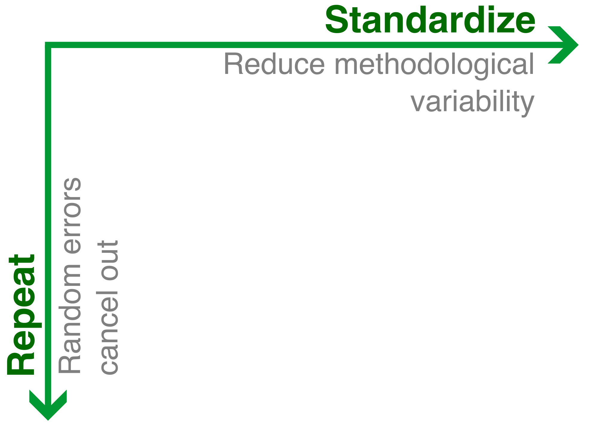 [Esteban, (2024)](https://doi.org/10.31219/osf.io/42bsu) [[Methods for analyzing large neuroimaging datasets](https://osf.io/d9r3x/)] ] ] --- count: false # More reliable measurements .center[ .boxed-content[ 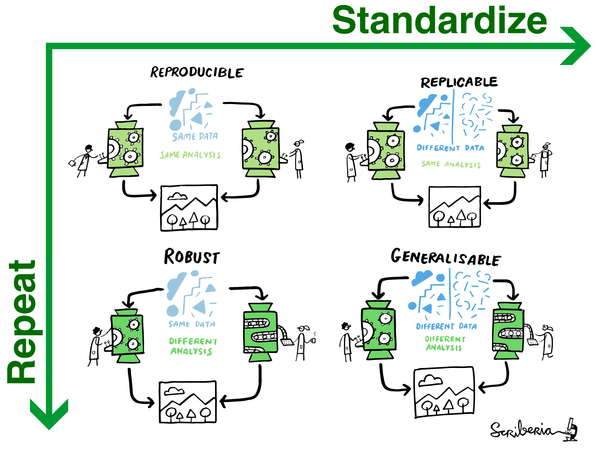 [Esteban, (2024)](https://doi.org/10.31219/osf.io/42bsu) [[Methods for analyzing large neuroimaging datasets](https://osf.io/d9r3x/)] ] ] --- count: false # More reliable measurements .center[ .boxed-content[ 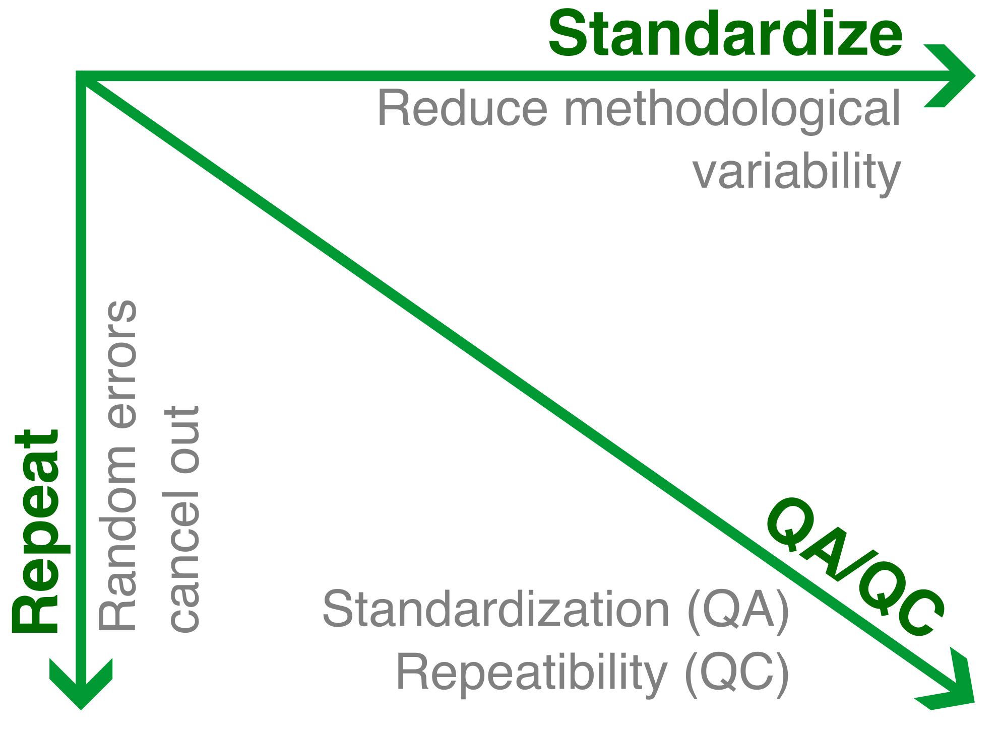 [Esteban, (2024)](https://doi.org/10.31219/osf.io/42bsu) [[Methods for analyzing large neuroimaging datasets](https://osf.io/d9r3x/)] ] ] --- # Where do we start? <br /> <br /> .boxed-content[ <img src="../../../talks/assets/neuroimaging-workflow-large.svg" alt="workflow" style="width: 100%" /> .center[ [Esteban et al., (2020)](http://doi.org/10.1038/s41596-020-0327-3); [Niso et al., (2022)](https://doi.org/10.1016/j.neuroimage.2022.119623) ] ] ??? --- # Where do we start? .boxed-content[ <br /> .center[ <img src="../../../talks/assets/neuroimaging-workflow-large.svg" alt="workflow" style="width: 70%" /> ] <br /> .larger[ Data collection <i class="fa-solid fa-circle-right"></i> easy to standardize (BIDS, scanners' software) Statistical modeling <i class="fa-solid fa-circle-right"></i> keep analytical flexibility not to stifle the development of new ideas Preprocessing <i class="fa-solid fa-circle-right"></i> offers an **opportunity** to reduce analytical flexibility and **enable** cross-study comparisons ] ] --- .vertical-center[ .center.white-bg[ .large[ **Standardization** .gray-text[<i>of preprocessing</i>] ] ] ] --- # Why do data require preprocessing? .boxed-content[ <br /> .large.center[ <i class="fa-solid fa-circle-exclamation"></i> MRI measurements *generally* **cannot** be directly analyzed. <i class="fa-solid fa-circle-exclamation"></i> ] <br /> .pull-left[ .center.larger[<i class="fa-solid fa-map-pin"></i> **Spatiotemporal location**] signal drawn from the same location and accurate time at all time points, sampled consistently with the analysis' design (e.g., surface, volume) ] .pull-right[ .center.larger[<i class="fa-solid fa-location-crosshairs"></i> **Signal *validity***] extraction of confounds, identification/accounting for artifacts, spatiotemporal filtering for denoising, etc. ] <br /> .boxed-bottom.large.center[ **End goal**: minimize false positives without increasing false negatives ] ] --- # Why do data require preprocessing? .boxed-content[ <br /> <br /> .large[ All analyses require consistency and accuracy in **spatiotemporal location**. ] <br /> .larger[ <i class="fa-solid fa-circle-right"></i> **within runs** (head-motion, slice-timing), <i class="fa-solid fa-circle-right"></i> **within individuals** (coregistration between runs, coregistration with anatomy [T1w images, surfaces, etc.], susceptibility distortion), and <i class="fa-solid fa-circle-right"></i> **across subjects** (spatial normalization) ] ] --- ## Example: susceptibility distortion <p align="center"> <img src="images/sdc-the-problem.svg" width="80%" /><br /> </p> --- # Why do data require preprocessing? <br /> .boxed-content[ .large[ All analyses must consider confounders and covariates that undermine the **validity** of the measurements. ] .larger[ * confounders such as global signals, signal drifts, DVARS, etc. * spatiotemporal filtering to increase SNR, * known artifacts such as head-motion parameters and derivations, etc. ] <br /> .boxed-bottom.large[ **Minimal preprocessing**: .gray-text[*fMRIPrep* is *conservative* in that it will not regress out signals or apply intended smoothing kernels] ] ] --- # Preprocessing & Reproducibility .boxed-content[ .large[ The reproducibility of preprocessing sets bounds to the reproducibility of downstream analyses. ] .larger[ * NARPS ([Botvinik-Nezer et al., 2020](https://doi.org/10.1038/s41586-020-2314-9)): single dataset, 70 teams, 9 <i>ex-ante</i> hypotheses. <i class="fa-solid fa-circle-right"></i> Striking analytical variability (even with teams using same preprocessing) * [Li et al., (2024)](https://doi.org/10.1038/s41562-024-01942-4): single test-retest dataset, 5 pipelines <i class="fa-solid fa-circle-right"></i> Moderate inter-pipeline agreement, limiting cross-study <s>reproducibility</s> [replicability] ] ] --- # Preprocessing & Reproducibility .boxed-content[ <br /> <br /> .large[ Beyond analytical variability, other sources of variability are on the way: ] .larger[ * Random seeds <i class="fa-solid fa-circle-right"></i> Keep track (*do not fix*) and report. * [Chatelain et al., (2023)](https://doi.org/10.48550/arXiv.2307.01373): Random rounding of floating-point calculations. <i class="fa-solid fa-circle-right"></i> Uncovered substantial changes between patch-releases of *fMRIPrep* ] ] --- # fMRIPrep: bird's eye picture .boxed-content.center[ <br /> <br /> <img src="https://github.com/oesteban/fmriprep/raw/f4c7a9804be26c912b24ef4dccba54bdd72fa1fd/docs/_static/fmriprep-21.0.0.svg" width="100%" /> ] --- .pull-left.center[ 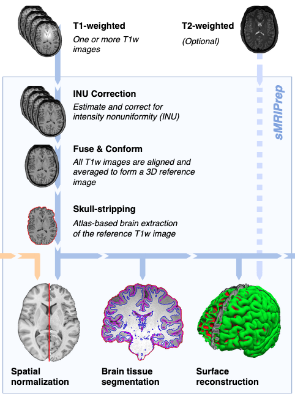 ] .pull-right[ # Anatomical processing .large[ Delivered within *sMRIPrep* ] .larger[ <i class="fa-solid fa-circle-right"></i> Denoising <i class="fa-solid fa-circle-right"></i> INU correction <i class="fa-solid fa-circle-right"></i> Averaging (multi-session) <i class="fa-solid fa-circle-right"></i> Brain extraction <i class="fa-solid fa-circle-right"></i> Spatial normalization <i class="fa-solid fa-circle-right"></i> Brain tissue segmentation <i class="fa-solid fa-circle-right"></i> Surface reconstruction ] ] --- .pull-left.center[ <br /> <br /> 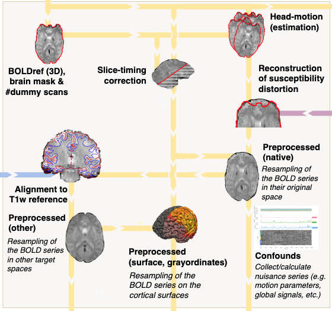 ] .pull-right[ # Functional processing .larger[ <i class="fa-solid fa-circle-right"></i> Reference volume <i class="fa-solid fa-circle-right"></i> Slice-timing (optional) <i class="fa-solid fa-circle-right"></i> Head-motion (estimation) <i class="fa-solid fa-circle-right"></i> Susceptibility distortion (estimation) <i class="fa-solid fa-circle-right"></i> Co-registration with anatomical T1w <i class="fa-solid fa-circle-right"></i> Resampling into specific spaces <i class="fa-solid fa-circle-right"></i> Confound collection ] ] --- # *TemplateFlow* .boxed-content.center[ <img src="https://www.templateflow.org/assets/templateflow_fig-birdsview.png" width="70%" /><br /> (<a href="https://doi.org/10.1038/s41592-022-01681-2">Ciric et al., 2022</a>) ] --- # *SDCFlows* .boxed-content[ .large[ SDC <i class="fa-solid fa-circle-right"></i> Susceptibility-derived Distortion Correction ] <br /> .larger[ *SDCFlows* "caters" preprocessed fieldmap estimations for *fMRIPrep* to reconstruct the nonlinear displacements field to revert geometrical distortion. ] .center[<img src="images/sdc-the-problem.svg" width="40%" />] ] --- # Standardizing preprocessing: visual reports .boxed-content[ <iframe src="https://fmriprep.s3.amazonaws.com/bootcamp-geneva-2024/sub-15.html" width="100%" height="540px" style="border: 0; margin-top: 15px" /> ] --- # Standardizing preprocessing: community building .large[fMRI practitioners have massively adopted *fMRIPrep* globally:] <p align="center"> 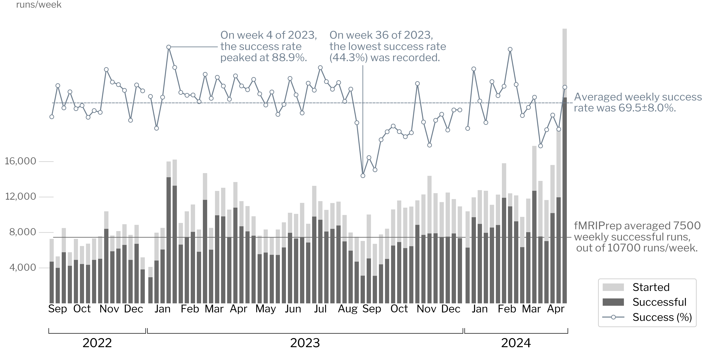<br /> </p> --- # Standardizing preprocessing: community building <p align="center"> <br /> </p> .large.center[<i class="fa-solid fa-circle-right"></i> which has permitted the creation of a large community.] --- # Building a community was important to *fMRIPrep* .boxed-content.large[ .no-bullet[ * <i class="fa-solid fa-comments"></i> Feedback & support: * error & bug reports <i class="fa-solid fa-bug" style="color: #ff4c26;"></i> help development, * feature requests <i class="fa-solid fa-lightbulb" style="color: #00bc07;"></i> help driving a roadmap, * questions <i class="fa-solid fa-circle-question"></i> are the entry point to deliver support * [<i class="fa-solid fa-bullhorn"></i> NeuroStars.org](https://neurostars.org) * <i class="fa-solid fa-user-plus"></i> Engage contributors (see [our guidelines](https://www.nipreps.org/community/CONTRIBUTING/)): * documentation, assistance debugging, code patches, everything counts! * <i class="fa-solid fa-globe"></i> Reach out, increase user-base. ] ] --- # Standardizing preprocessing: software versions .larger[ <i class="fa-solid fa-circle-right"></i> It's critical to report **exact versions** <i class="fa-solid fa-circle-right"></i> Semantics inform about compatibility: **24.0.1** <i class="fa-solid fa-circle-right"></i> Long-term support (LTS) program. ] <p align="center"> 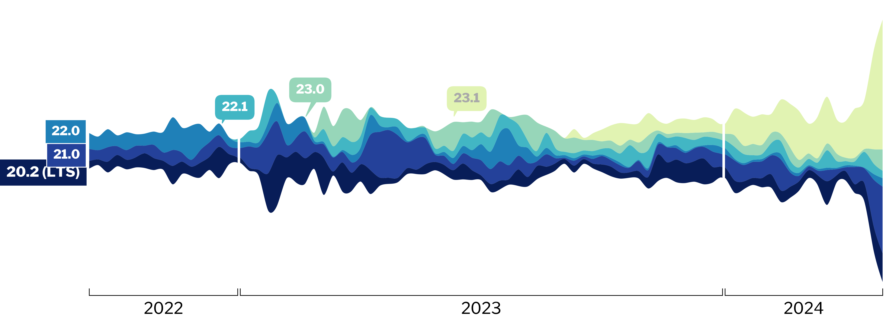<br /> </p> --- <p align="center"> <img src="../../../talks/assets/nipreps-chart.png" width="63%" /><br /> <em>NiPreps</em> (<a href="https://doi.org/10.31219/osf.io/ujxp6">Esteban et al., 2020</a>) </p> --- # *NiPreps* produce *analysis-grade* data .boxed-content[ <br /> .larger.center[ "*analysis-grade*" data <i class="fa-solid fa-circle-right"></i> data **directly consumable by analyses** ] .pull-left[ <br /> <br /> *Analysis-grade* data is an analogy to the concept of "*sushi-grade (or [sashimi-grade](https://en.wikipedia.org/wiki/Sashimi)) fish*" in that both are: .large[<i class="fa-solid fa-circle-right"></i> **minimally preprocessed**,] and .large[<i class="fa-solid fa-circle-right"></i> **safe to consume** directly.] ] .pull-right.center[ <img src="../../../talks/assets/nipreps-transparent.png" width="100%" /> <a href="https://www.nipreps.org"><img src="../../../talks/assets/qr-nipreps-url.svg" width="40%" /><br /> www.nipreps.org</a> ] ] --- .vertical-center[ .center.white-bg[ .large[ **Repetition** .gray-text[<i>of MR connectomics</i>] ] ] ] --- # Data — The Human Connectome PHantom (HCPh) .right-column3[ .larger[ **Registered Report** <br /> Stage 1 Accepted-in-principle: <a href="https://doi.org/10.17605/OSF.IO/VAMQ6"><img src="../ISMRM2024/images/qr-RR.svg" alt="workflow" style="width: 85%" /> Provins et al., (2023)</a> ] ] .left-column3[ <img src="https://www.axonlab.org/hcph-sops/assets/images/cohort1.png" alt="workflow" style="width: 87%" /> ] --- # The paradox (Prof. C. Chambers) -- <br /> <br /> <br /> ## Results determine careers <br /> -- and <br /> ## Resarchers SHOULD NOT determine results. --- # What are Registered Reports? <p align="center"> 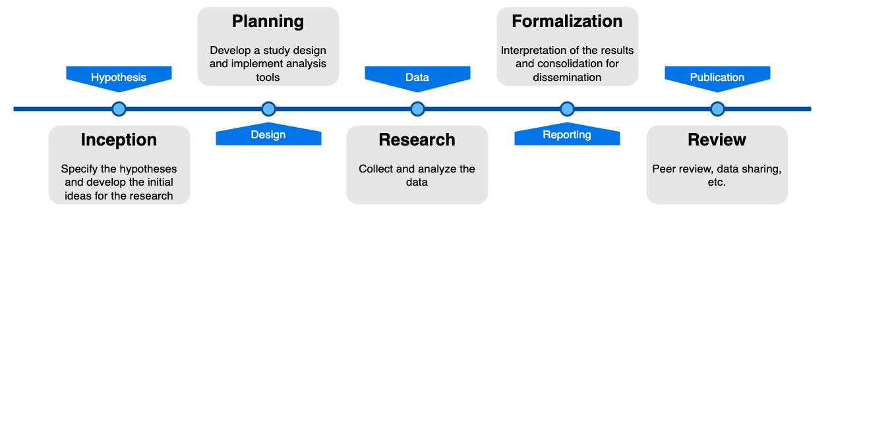<br /><br /> </p> --- # What are Registered Reports? <p align="center"> 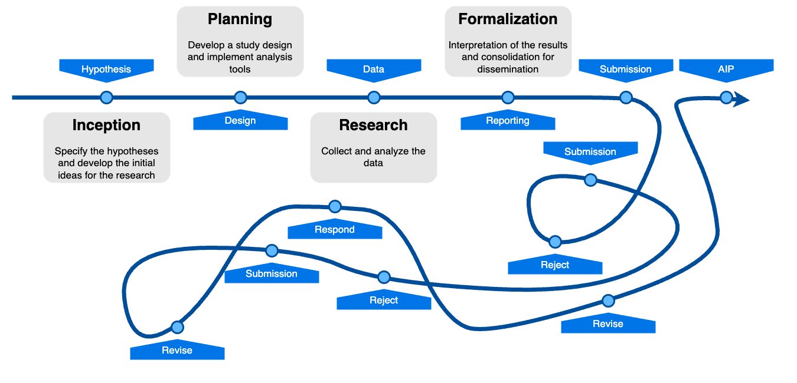<br /><br /> </p> --- # What are Registered Reports? <p align="center"> <img src="../BHD2023/images/RRs-workflow.png" width="90%" /><br /><br /> </p> --- .vertical-center[ .center.white-bg[ .large[ **Results do not matter** ] ] ] --- count: false .vertical-center[ .center.white-bg[ .large[ **Results** [*whether positive or negative*] **do not matter** ] ] ] --- .vertical-center[ .center.white-bg[ .large[ **QA/QC** ] ] ] --- # QA/QC of the neuroimaging worflow <br /> <br /> .boxed-content[ 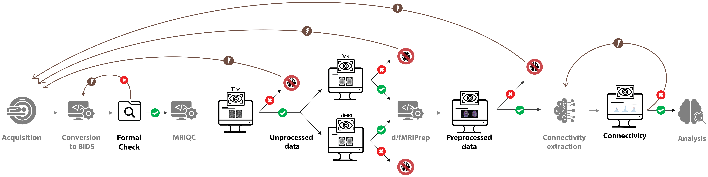 <br /> .align-right[ ([Provins et al., 2023](http://doi.org/10.3389/fnimg.2022.1073734)) ] ] ??? With a corresponding feedback loop. For instance, we may need to revise nuisance regression. --- # QA/QC protocols: 'Swiss-cheese security model' .boxed-content[ .center[ 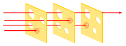 .small[ [BenAveling @ wikipedia](https://en.wikipedia.org/wiki/Swiss_cheese_model#/media/File:Swiss_cheese_model_textless.svg) ] ] ] ??? For those with knowledge about security protocols, this approach will surely evoke the Swiss cheese model. The model assumes that all QC checkpoints will have holes through which data progresses toward analysis. By layering several QC checkpoints looking at the data in different ways, we make sure that images with potential to bias the results do not make all the way through the workflow. --- # Plan ahead: SOPs .boxed-content[ .distribute.large[ * You want to have **Standard Operating Procedures**, a document: * prescribing all details of analysis, * particularly establishing QC/QA points and triggered actions, * establishing exclusion criteria, * accessible to all involved stakeholders. * Check out our *SOPs-cookiecutter* project: * [GitHub template-repository](https://github.com/nipreps/sops-cookiecutter) * [Rendered example](https://www.nipreps.org/sops-cookiecutter/) ] ] --- # HCPh's SOPs .boxed-content[ <iframe src="https://www.axonlab.org/hcph-sops/" width="100%" height="510px" style="border: 0; margin-top: 15px"></iframe> .center.small[https://www.axonlab.org/hcph-sops/] ] --- # Bias introduced by defacing .boxed-content.center[ 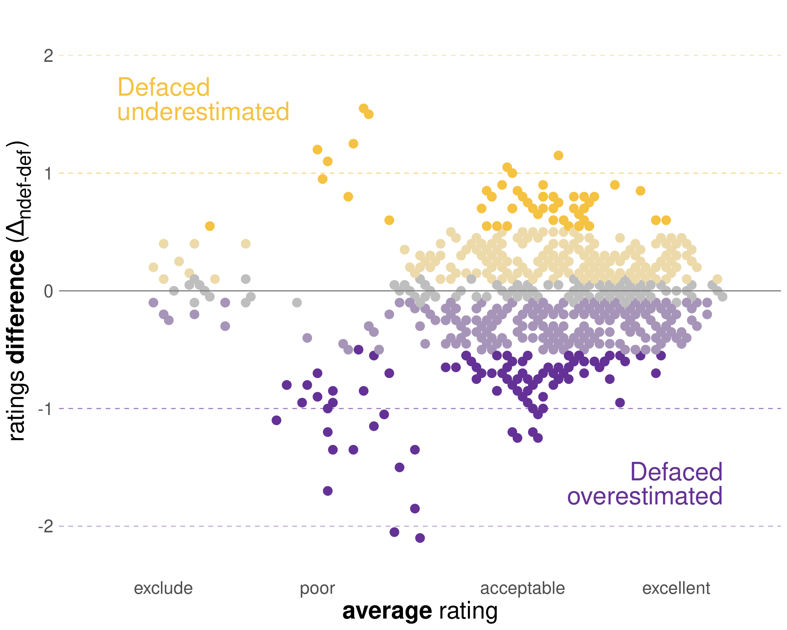 .small[ ([Provins et al., 2023](https://rr.peercommunityin.org/articles/rec?id=346)) ] ] --- count:false # Bias introduced by defacing .boxed-content.center[ .small[ ([Provins et al., 2023](https://rr.peercommunityin.org/articles/rec?id=346)) ] ] --- count:false # Bias introduced by defacing .boxed-content.center[ 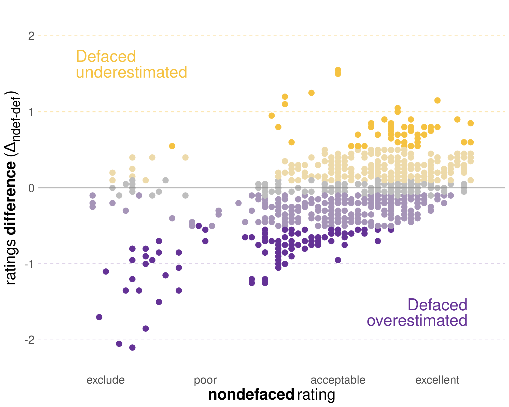 .small[ ([Provins et al., 2023](https://rr.peercommunityin.org/articles/rec?id=346)) ] ] --- # Bias introduced by defacing .boxed-content.center[ 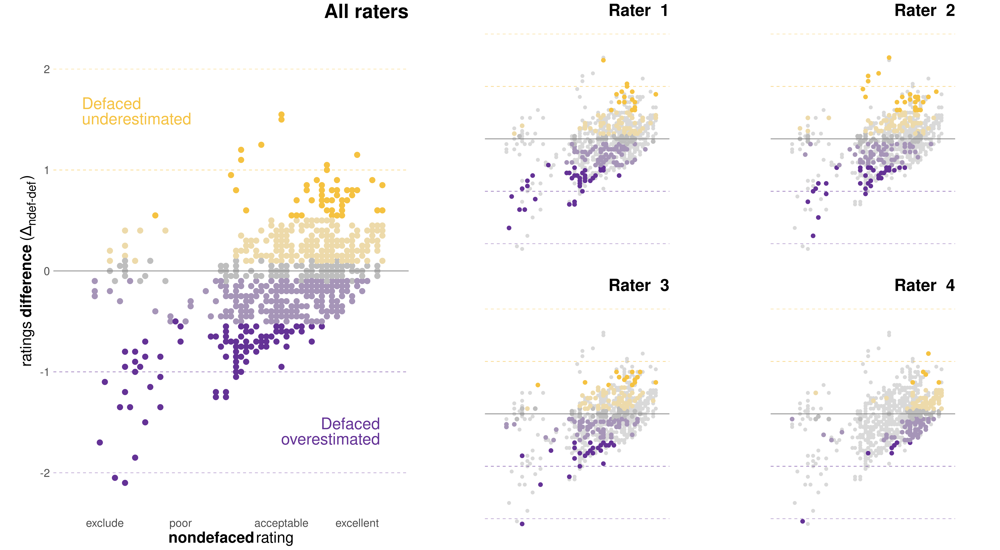<br /> .small[ ([Provins et al., 2023](https://rr.peercommunityin.org/articles/rec?id=346)) ] ] --- # Conclusion .boxed-content[ * .large[Incentive structure unchanged over 15yr.] * Analytical variability as the new multiple-comparisons problem * Transparency & reproducibility as a solution * .large[Standardization] * The case of *fMRIPrep* * The *NiPreps* community * .large[Repetition] * The HCPh study * .large[QA/QC] * Registered Reports * Tools: SOPs & MRIQC * The defacing effects on QA/QC ] ??? --- layout: false count: false .center[ <a href="https://oesteban.github.io/talks/ISMRM2024/"></a> ## Thanks <br /> <br /> ### Oscar Esteban < phd@oscaresteban.es > Mat-Tech Lab 12.11.24 Funding: [SNSF 185872](https://data.snf.ch/grants/grant/185872), [RF1MH121867](https://reporter.nih.gov/project-details/10260312), [CZI EOSS5-000266](https://chanzuckerberg.com/eoss/proposals/nipreps-a-community-framework-for-reproducible-neuroimaging/) ] ???